Start with a high-level problem and a user.Real people, real pain. Big and vague is fine; that’s the raw material.
Map causes with a fishbone diagram.Every bone is a hypothesis about why the problem exists.
Drill to a root-cause tree.Follow each loud bone with the five whys. The opportunity is where the branches converge. If the problem moves, loop back to step 1.
Sketch the solution.A well-framed problem hands you the solution. Can’t see one yet? Keep drilling.
Frame your business thesis.X will buy Y because of Z.
08
Step1/5
Problem & user
Start with the problem and the user.
What is the problem?One sentence, no solution hiding inside it.
Who exactly has it?A person you could name: their job, their week, their hobby.
How bad is it?Frequency times pain. A rare, mild annoyance is not a business.
User group: name the person
Say
What they tell you
Do
What you watch them do
Think
What runs in their head
Feel
What it costs them
Needs
The job to be done
Wants
What good would look like
Pain points
Where today’s workaround breaks
Access to tech
Phone, app, none of it
09
Step2/5
Map the causes with a fishbone
Then drill each loud bone
Why?
→
Why?
→
Why?
→
Why?
→
Why?
→
Root-cause tree
10
Step3/5
Drill the loud bones to a root cause
Loud bone A
A loud bone
why?
a cause beneath it
why?
a cause beneath that
why?
Root cause
this branch’s root cause
Loud bone B
Another loud bone
why?
a cause beneath it
why?
a cause beneath that
why?
Root cause
this branch’s root cause
in common?
Each loud bone has its own root cause. When two branches land on the same one, that is a strong signal.
11
Steps 1 to 3
Framing is a loop, not a checklist.
The whys often move the problem or change the user. That is the method working. Reframe and run it again until the root cause stops moving.
In practice you verify the loop by talking to people. Not this week. This week we move fast.
12
Step4/5
A sharp frame hands you the solution
Vague frame
A loose problem fits a hundred solutions. You are still guessing which one to build.
Sharp frame
A precise root cause points at one solution. You build that one.
If no solution is in sight, the framing is not finished. Go back to the fishbone and drill further.
13
Step5/5
Frame your business thesis
X will buy Y because of Z.
Xthe customer you can name
Ythe solution
Zthe reason they buy
One sentence, plain words. A hypothesis you can actually test.
14
Step 1 of 5 · worked
Run the method on a real 2020 problem.
You keep hearing the same thing from SaaS founders: “Customers want the product, ARR is growing, but we’re always short on cash.” What opportunity is hiding here?
What is the problem?
Growth is constrained by cash, even when customers want the product.
Who exactly has it?
A founder, CFO, or revenue leader at a growing B2B SaaS company.
How bad is it?
It hits hiring, sales velocity, discounting, dilution, and runway.
Don’t solve it yet. Keep the problem raw for one slide, and resist the founder instinct to jump straight to a product.
15
Step 2 of 5 · worked
Map every cause before you choose one.
Revenue model and cost structure are the loudest bones. We drill those next.
16
Step 3 of 5 · worked
Drill each bone to its own root cause.
Loud bone A
Revenue model
why?
ARR is billed over time
why?
buyers won’t prepay a year
why?
Root cause
Cash comes in slowly
Loud bone B
Cost structure
why?
you pay to acquire a customer upfront
why?
that outlay lands before any revenue
why?
Root cause
Cash goes out fast
Insight
Money goes out before it comes in. The recurring contract makes that timing gap financeable.
17
Step 4 of 5 · worked
A sharper frame hands you a sharper product.
Ill-framed
“SaaS startups need more cash.”
Now anything is the answer: a VC marketplace, a burn-rate tool, cheaper cloud, a CFO dashboard. The frame gives you no grip.
Better
“Recurring revenue is predictable, but the cash arrives after the costs.”
Now a solution appears: advance cash today against future recurring revenue.
Best frame
“In B2B software the buyer wants to pay over time, while the vendor needs cash upfront.”
Now it is sharp: one player absorbs the timing gap between buyer and vendor.
18
The reveal
This is Capchase.
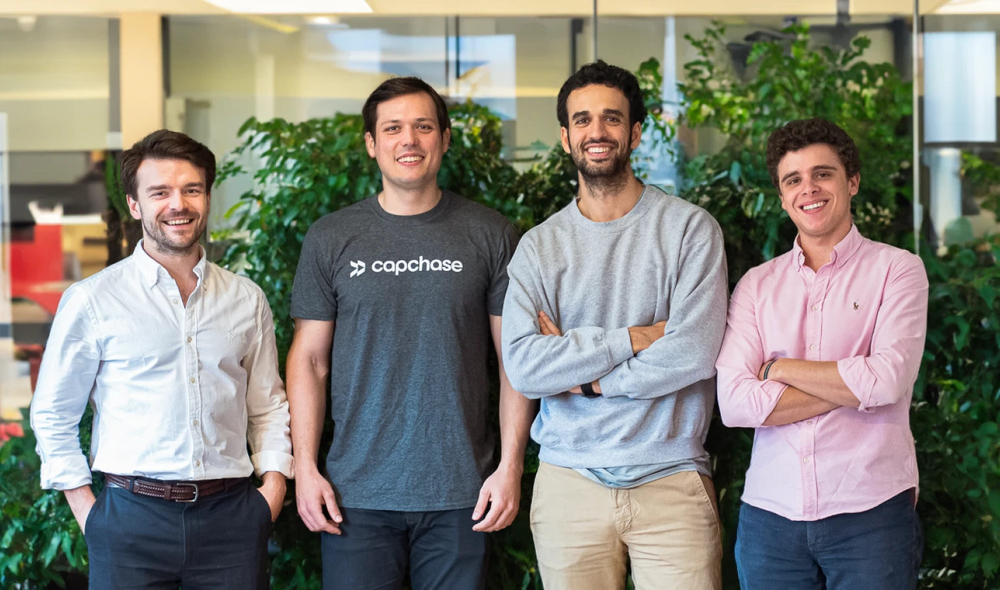
The four co-founders. The INSEAD link: Luis Basagoiti Marqués, MBA’20D.
A fix for the timing conflict in B2B software: the buyer pays over time, the vendor gets cash now.
“Every buyer wants to pay as late as possible, while every SaaS company wants to get paid as early as possible so they can recover their customer acquisition costs. In any of the payment options, one party is playing bank, which creates friction and hurts conversion.”Miguel Fernandez Larrea, co-founder & CEO, launching Capchase Pay (2023)
2020founded, headquartered in New York
#1highest-funded MBA startup of 2024, Poets&Quants
19
Step 5 of 5 · worked
X will buy Y because of Z.
X
Y
Z
Capchase Growlaunched 2020
Customer
Growing SaaS founders & CFOs
Solution
Non-dilutive capital against future ARR
Why they buy
Future revenue is predictable, but growth costs are immediate
Capchase Paylaunched 2023
Customer
B2B software vendors and their buyers
Solution
Embedded vendor financing (B2B BNPL)
Why they buy
Buyers pay over time; vendors get paid upfront
Same problem structure, two products: finance the vendor’s balance sheet, then finance the transaction.
20
Tonight · A1 · due 23:59
Five theses on Torneio, by midnight
Generate 20+ opportunities: sit by yourself, quiet, a dedicated block of time. Diligent effort beats waiting.
Pick your 5 best: against the four criteria on the right.
Write each one: a snappy title + a 100–125-word description: thesis first, then the problem, who has it, what’s new or preferred.
Submit each as its own entry: tournament “INBM June 2026” at www.torneio.org. You register in a few minutes, in this room.
A course-viable idea
You’d want to work on it
No novel technologyor new product design, think BMI
Limited capital:a few weeks to a validated concept
Only generate, do not judge.No self-censoring. Nothing is too simple, obvious, or silly. Crazy ideas are appreciated. Write everything down.
21
Generate, select, form, in four days
A tournament is a search.
200 ideas → 40 sixty-second pitches → 10 teams of 4 → final pitches Friday
22
A1 · the flow on torneio.org
Sign up, confirm, join, submit. Each idea is its own entry.
Visit https://www.torneio.org: note the https, note the .org.
Sign up as a new user; confirm via the email you receive.
Join Tournament by Token: the token is on the next slide.
Select the tournament: INBM June 2026.
Click “Submit an Idea”: 5 separate submissions, one per idea.
Low-tech trust: write your ideas in a doc first, then paste; don’t ideate into the tool.
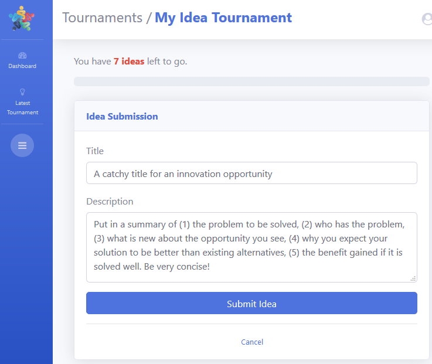
torneio.org: create an account, then “Submit an Idea”: five separate entries.
23
Scan to join
The tournament is open. Register now, in the room.
www.torneio.org
1
Sign up & confirm
The confirmation email lands in spam: check your spam folder.
#1 mistake
2
Join by token
ZVFIZS
3
Find “INBM June 2026”
Select the tournament on your dashboard. Tonight, each idea is its own entry.
24
A1 · the gold standard: a thesis first, then 100–125 words
Write it as a thesis: X will use Y because of Z.
Thesis
Hospitals, ambulance operators, and patients will use StanPlus, one platform that connects every ambulance to every emergency, because India has no 911.
X · Customer
Hospitals and ambulance operators who already own the vehicles, and the patients who can’t reach them in time.
Y · Solution
An “Uber for ambulances”: one number, one app, dispatch and tracking across providers. Cheap to build, no fleet to buy.
Z · Why they buy
Disaggregated emergency response means long waits and lost lives. Coordination is the missing layer.
Secret sauce
Co-founder Prabhdeep Singh’s deep healthcare network in India opened the doors; smartphones and AI made the platform cheap to build.
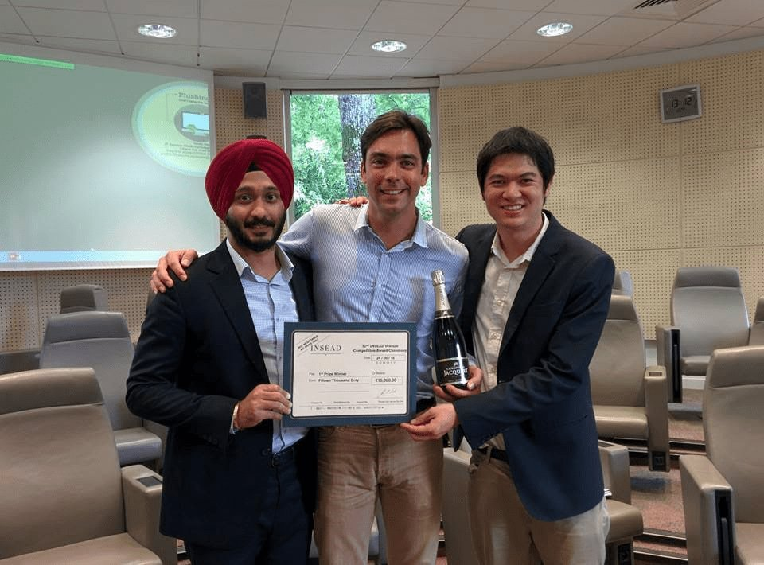
Three INSEAD classmates, Prabhdeep Singh, Antoine Poirson, Jose Leon, won the INSEAD Venture Competition. RED.Health now coordinates 10,000+ ambulances across 550+ Indian cities, while owning almost none of them.
Sources: RED.Health (formerly StanPlus, founded Hyderabad 2016 by INSEAD MBA classmates Prabhdeep Singh, Antoine Poirson, Jose Leon; rebrand Jan 2023, BioSpectrum India); scale per Inc42 profile (2025): 10,000+ ambulances, 550+ cities, asset-light (~5% owned).
25
What the crowd will see tonight
Open with the thesis, then back it up sentence by sentence.
Vague
TravelMind: the future of travel
“TravelMind is an AI-powered super-app that will revolutionize how everyone plans, books, and experiences travel. The travel market is worth trillions and there is no real competition for what we are building. Users will love the seamless experience and companies will pay for premium access. The possibilities are endless.”
No user, no problem, no reason to believe. Fifty words that say nothing.
Thesis first
BridgeStay: back-to-back intern housing
“Landlords near internship cities will list with BridgeStay because it removes the vacancy risk between short stays. Every summer, thousands of interns fight over ten-week rentals while landlords refuse short lets: turnover fees and empty weeks eat the premium. BridgeStay chains consecutive intern stays into one guaranteed twelve-month calendar, with one cleaning contract and one deposit scheme. Interns get vetted, furnished flats sized to their dates; landlords get year-round occupancy at short-stay prices. We start with the internship corridors we know, then expand city by city. First test: fifty pre-commitments from incoming summer interns.”
Thesis up front, then pain, mechanism, who pays, and the first test.
26
Part 2 · Generate
Let’s start generating ideas.
27
Opportunities
An opportunity is a new match between a solution and a need.
Solutions
Opportunity
a new match
Needs
A winning opportunity delivers that match to a real customer, and creates value doing it.
Generate now. Save the judging for later.
28
Do now · the quiet hour
Silent, solo, on paper.
Laptops closed, paper out: silence while the cards turn.
Start generating: if full ideas won’t come, words are enough.
Mine your passions, skills, annoyances: markets you already understand.
Aim at your colleagues: ideas they relate to get more accurate ratings.
Do not judge: nothing is too simple or too silly. Write everything down.
Generate, don’t judge
20+
raw opportunities before you leave. Five become theses tonight. Burnt out? Stand, stretch, come back.
29
Stimuli · the product / service view
Nine ways to manufacture an opportunity.
Spray, don’t study: the full catalog is on the LMS. Generate against each card as it turns.
1/9
Look for a cool innovation
Alternate solutions, alternate needs.
2/9
Follow your lead-user passion
Shortcomings in high-performance products.
3/9
Daily annoyances
Universal and vexing. Then dream the fix.
4/9
De-commoditize
Take something upmarket: brand, convenience, luxury.
5/9
Bring down-market
An alternate solution to the same need.
6/9
Social & demographic trends
Anticipate future needs.
7/9
Geographic transfer
Import what works elsewhere. Use your international exposure.
8/9
Exploit new technology
AI is the medium now, not a trend on the list.
9/9
Look for blue oceans
Uncontested market space: the INSEAD classic.
30
Stimulus1/9
Look for a cool innovation
Split any innovation into a need and a solution. Swap each side.
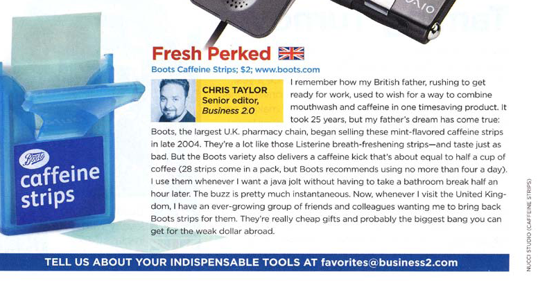
Dissolvable caffeine strips. One need (caffeine), one solution (a film strip). Hold one side still and swap the other.
Hold the need · caffeine, no coffee
What else delivers it?
A caffeine spray
Caffeine jelly beans
Sweetener packs that wake you up
Hold the solution · a film strip
What else could it carry?
Painkillers, no water needed
Vitamins for kids who hate pills
Flavour dosed onto a plate
Your turn. Hold one side still, swap the other: first more needs, then more solutions.
31
Stimulus2/9
Lead-user passion
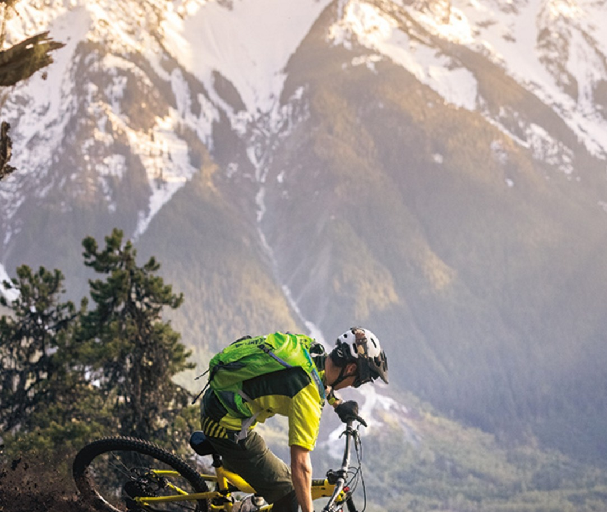
Your obsession is a market you already understand. You are the lead user.
A water-bottle problem on a long, hot race: an IV bag, a hose over the shoulder, clamped with a clothespin.
Michael EidsonCyclist and EMT · the lead user who built CamelBak
32
Stimulus3/9
Daily annoyances
Taavet HinrikusINSEAD MBA ’10D · Skype’s first employee
Solve what annoys you. A pain you feel is a market you understand.
Bank fees ate ~£500 on a £10,000 transfer. Two friends started swapping at the real rate. That became Wise, now listed on the London Stock Exchange.
33
Stimulus4/9
De-commoditize a commodity
Move a commodity upmarket.
Take an inexpensive, undifferentiated product: flour, mints, table salt, algae.
Ask what its deluxe version looks like, and why it doesn’t exist yet.
Add brand, convenience, or luxury, and charge for it.
FUL Foods turned spirulina, a commodity algae, into a premium drink and a natural blue food colour. Julia Streuli, Sara Guaglio and Cristina Prat (INSEAD MBA ’19D) won the INSEAD Venture Competition.
34
Stimulus5/9
Bring it down-market
Take an expensive, excellent thing and strip it to the essential.
Find a great service only a few can afford. Cut what they don’t need, and deliver ~80% of the value at ~20% of the cost.
The win
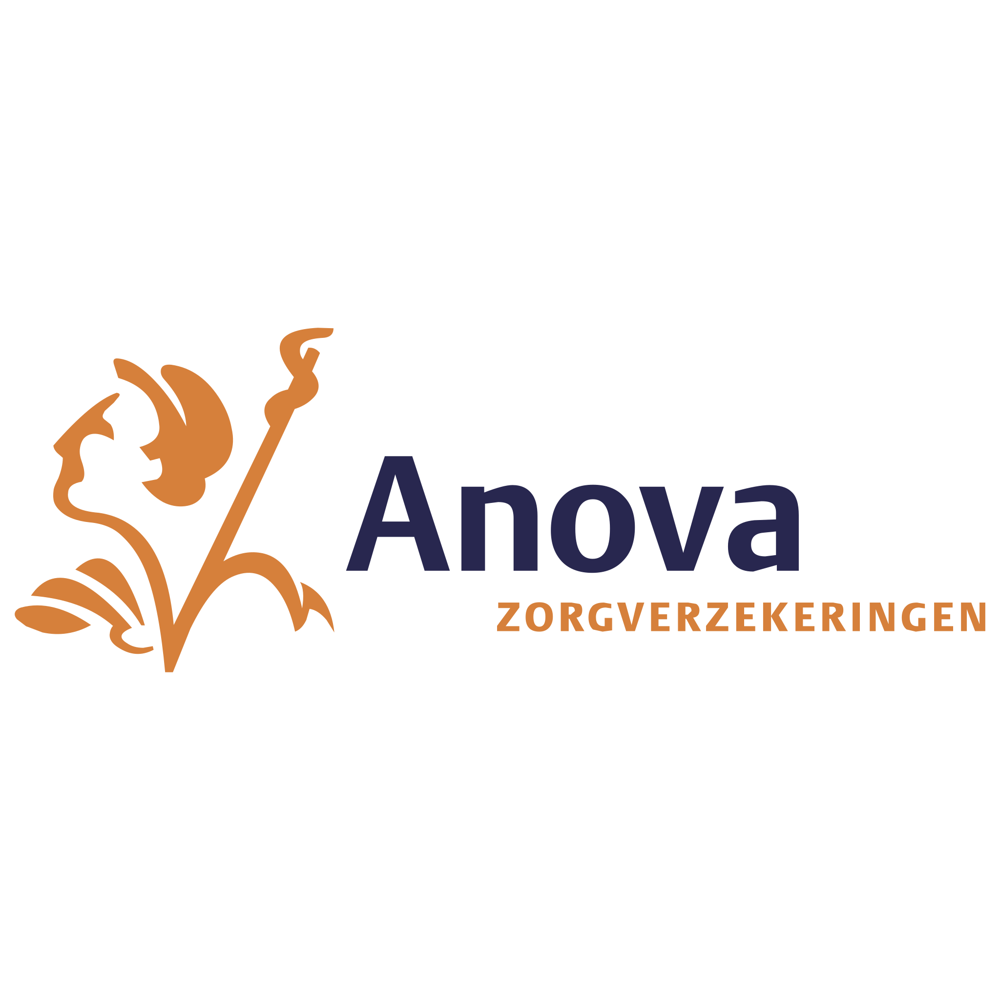
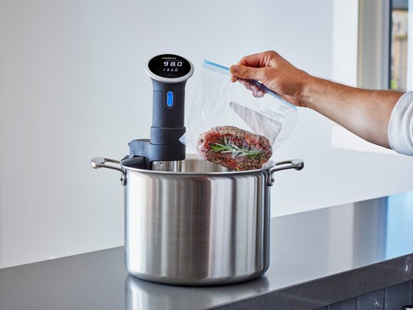
Anova took lab-grade sous-vide that cost $1,000+ in restaurant kitchens and put the same precision in a sub-$200 home device.
Sold to Electrolux, 2017
The caution
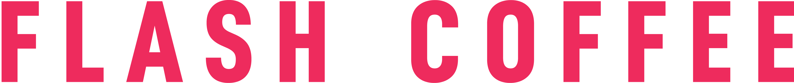
Flash Coffee took barista coffee down-market across Asia at half the price, and grew fast on cheap funding.
Singapore business liquidated, 2023
Down-market only survives if the unit economics come down with the price.
35
Stimulus6/9
Demographic trends
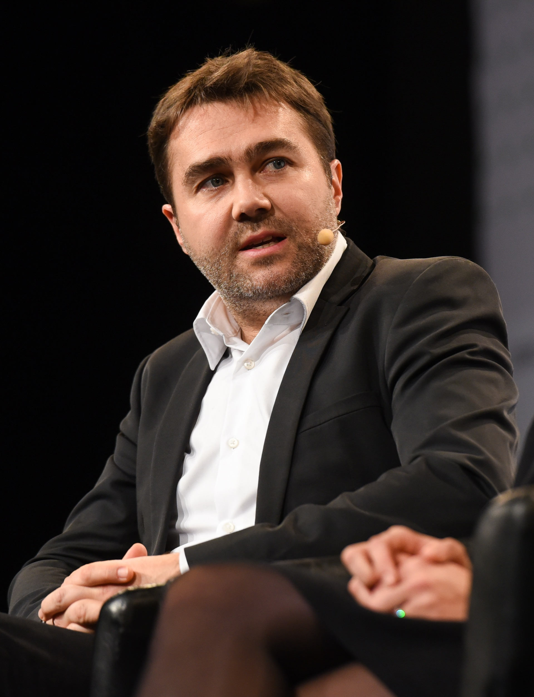
Frédéric MazzellaINSEAD MBA ’07D · founder, BlaBlaCar
Ride a wave that’s already moving.
Spot a shift in how people live or spend. BlaBlaCar turned strangers trusting strangers online into full car seats, owning no cars.
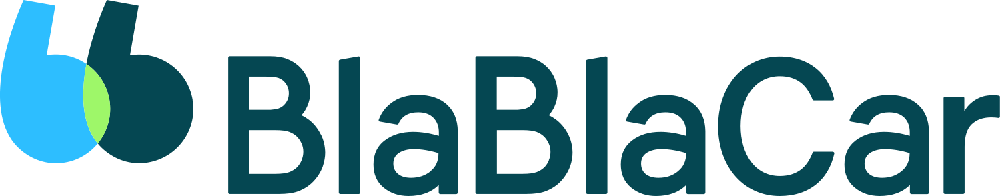
Waves moving now, pick one
Longevity· aging populations
The loneliness epidemic
Privacy· de-Googling
Solo living· one-person homes
GLP-1 ripple· Ozempic effects
Sober-curious
36
Stimulus7/9
Geographic transfer
Innovations get stuck in one geography. Carry one across a border.
Where it already works
Where someone built the brand
Thailand Krating Daeng, a local tonic
Worldwide the energy-drink category
Milan the Italian espresso bar
Seattle the third-place coffeehouse
Si Racha, Thailand a local chili sauce
United States Sriracha, a pantry staple
The Amazon, Brazil açaí, an everyday staple
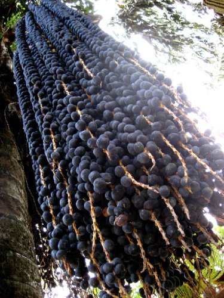
California the brunch-bowl craze
37
Spotlight
Geography meets technology
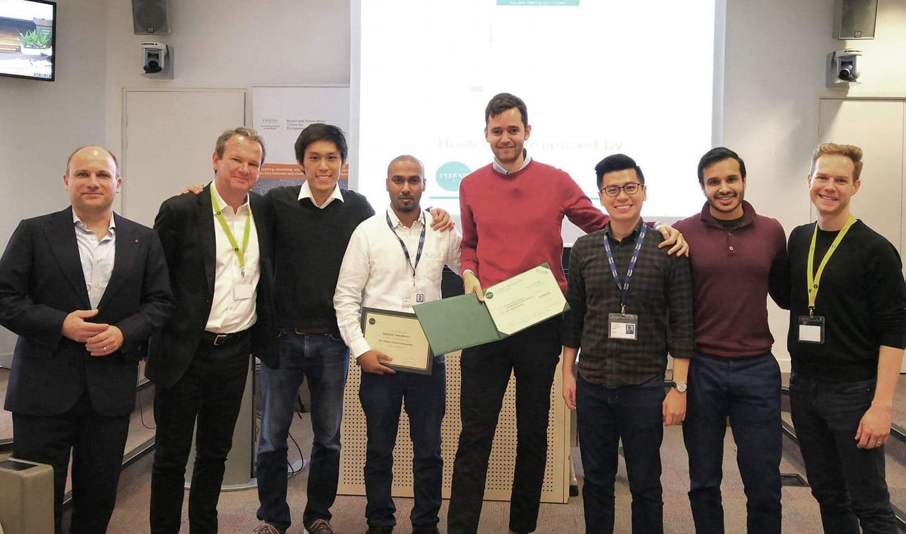
Tim van Vliet & Michael BadeskiINSEAD MBA ’19J · co-founders
Move the innovation to where it’s needed.
Black-soldier-fly protein, farmed on palm-oil by-products, turned into aquaculture feed in Singapore and Indonesia. A geography and a technology, combined.
Acquired, 2023
38
Stimulus8/9
Exploit new technology
What does AI let you do that you couldn’t do before?
Karhub · Brazil, 2019
A marketplace that speaks auto parts.
The mess: used parts scattered across thousands of scrapyards
The unlock: everyone suddenly comfortable buying and selling on their phones
The build: a certified marketplace matching buyers to fragmented inventory
Run the question against your own week. What can you build today that was impossible last year?
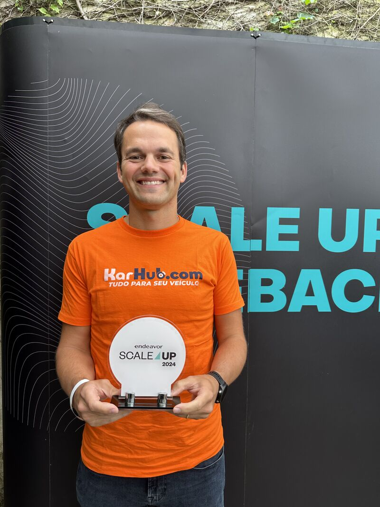
Leonardo CanepaINSEAD MBA ’15D · São Paulo
39
Spotlight
Exploiting new technology
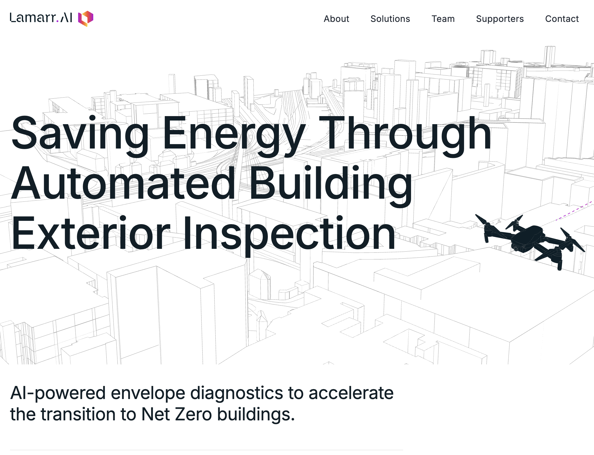
Drones plus AI now read a building’s skin.
Inspecting a building’s envelope used to mean a person on a lift, working slowly. Drones and AI now find the heat leaks and defects fast. A Georgia Tech and MIT research spin-out.
Dr. Tarek RakhaCo-founder & CEO · Georgia Tech
40
Look farther.
41
Part 3 · Patterns
Patterns in business models.
Now we manufacture opportunities on purpose.
42
What was your favorite case in the core?
Turn the creative act into an analytical search.
1 · Abstract
Name the move behind a win.
Strip the company away and keep the move. Uber matched idle drivers to riders through an app. The real move is matchmaking.
→
2 · Understand
Learn when it pays.
Both sides fragmented, search costly, trust scarce. Those are the conditions where matchmaking creates value.
→
3 · Translate
Carry it somewhere new.
RED.Health ran the same matchmaking on ambulances in India. Same move, new market.
A creative task becomes an analytical one: find the move, learn its rules, then go looking for the next place it fits.
43
The theory of a business.
Timeline of events
Profit formula
Revenue model
Price · volume (market size) · ancillary sales
Cost structure
Direct and indirect costs · economies of scale and scope
Resource velocity
Lead times · turns · throughput · utilization
Risk exposure
Riskiness of revenues, costs, and resource velocity
Sensitivity of profit to changes in price, volume, cost, and utilization
Information riskIncentive risk
44
The menu · business model innovation
Change the formula, the timeline, or the relationships.
Run your seed past each family the way you ran it past the nine stimuli.
Change the profit formula
What it moves: cost, revenue, resource velocity.
Go low touchAutomate costly human contact. Cut the cost, then the price.
Focus and standardizeOne segment, one job. Break the quality-cost trade-off.
Speed upCompress clock-speed. Decide after the information arrives.
Commit after informationHold the decision open until uncertainty resolves.
Change the relationships
What it moves: information and incentive risk.
Build a marketplaceMatch two sides, build trust, cut search costs.
DisintermediateCut the middleman. Sell direct, own the customer.
Modularize and servicizeStandard blocks, multiplied variety. Sell the outcome, not the asset.
After Girotra & Netessine, “Four Paths to Business Model Innovation,” Harvard Business Review, July–August 2014.
45
Pattern · Low touch
Strip out costly human contact; let technology carry the load.
The innovation
Eliminate or automate costly human contact; substitute technology.
Cut the cost, then cut the price.
Works best when
Labour is a big share of cost.
Contact adds no value for the segment.
The technology is good enough.
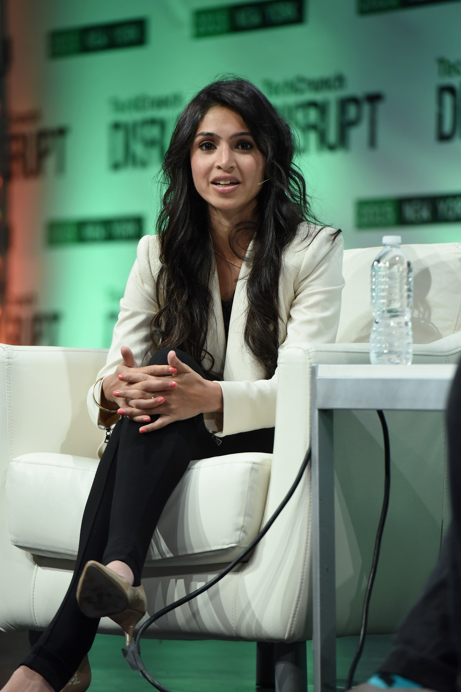
Payal Kadakia & Sanjiv SanghaviOne app for thousands of studios · $1B unicorn (2020), bought by Mindbody (2021)
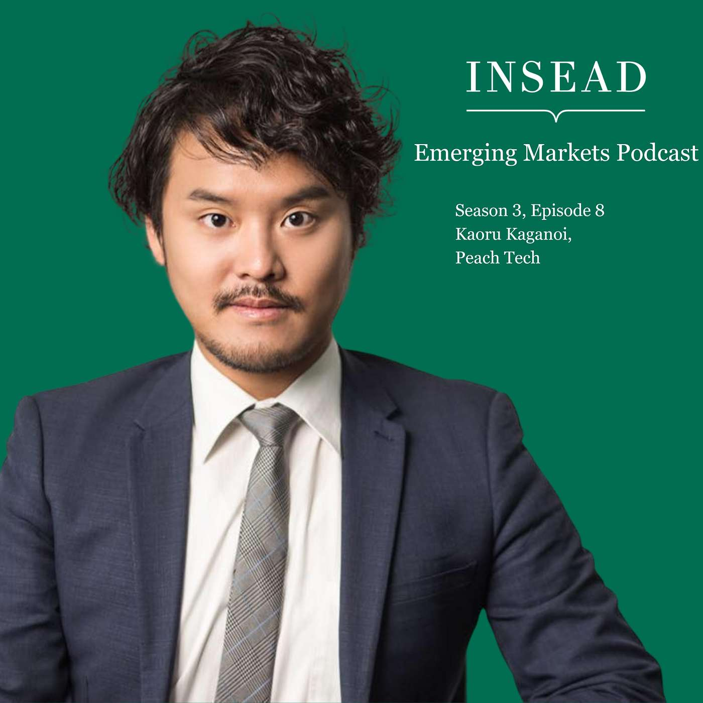
Kaoru KaganoiUsed cars online in Nairobi · INSEAD MBA ’16J · $11M Series A (2025)
Sources: ClassPass (Payal Kadakia & Sanjiv Sanghavi; $285M at a $1B valuation, 2020; acquired by Mindbody, 2021); Peach Cars (Kaoru Kaganoi, INSEAD MBA ’16J, & Zachary Petroni; Nairobi used-car marketplace; $5M seed 2023, $11M Series A 2025).
46
Pattern · Focus & standardize
Do one thing, and break the quality-cost trade-off.
The innovation
Focus on one segment of the market.
Standardize the operation around it; lift service as you go.
Decrease both revenue and cost.
Works best when
Different segments have genuinely different needs.
Mixing segments complicates the operation.
Chick-fil-AA narrow menu, the highest sales per store in U.S. fast food.
RyanairOne aircraft type, one class, no frills.
Narayana HealthHigh-volume cardiac surgery at a fraction of the cost.
Aravind Eye CareCataract surgery on an assembly line, ~$50 a case.
Focus examples: Chick-fil-A (highest U.S. fast-food sales per store); Ryanair (single 737 fleet); Narayana Health (Dr. Devi Shetty; ~$2,000 open-heart surgery); Aravind Eye Care (Dr. G. Venkataswamy; ~2,600 surgeries per surgeon per year).
47
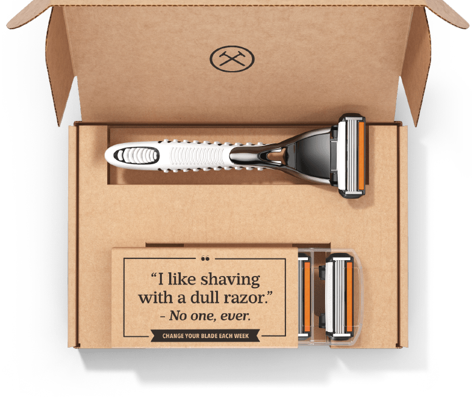
Focus + subscription
One blade, one box, on repeat.
One product, one segment, sold by subscription: the blades just arrive and nobody re-decides. Focused operations made it better and cheaper at once.
Unilever paid $1B, 2016
Michael DubinFounder, Dollar Shave Club
48
Pattern · Speed up the timeline
Compress the clock-speed and you out-react the giants.
The innovation
Compress the cycle; decide after the information arrives, not before.
Trade a little cost for far less risk of guessing wrong.
Works best when
Demand is uncertain and hard to forecast.
The cost of a wrong guess beats the speed premium.
Gapdesign to store
~9 months
Zara / H&Mdesign to store
~2 weeks
Shein“real-time fashion”
days
With a nine-month lead time you can’t forecast a trend; with a two-week loop you don’t have to. Shein pushed it to the extreme, speed alone is not a strategy.
49
Pierre-François ThalerINSEAD MBA ’99 · co-founder, EcoVadis
Low touch + focus + speed
Three patterns, one company.
A focused factory for sustainability ratings: analysts score uploaded documents, one supplier, one number. Low touch and fast: about 80% of a full audit, in far less time.
Unicorn since 2022 · 150,000+ companies rated
Sources: insead.edu bio (Thaler, MBA ’99); EcoVadis $500M raise at unicorn valuation, Jun 2022; 150,000+ rated companies per company data.
50
Pattern · Marketplaces & platforms
Match two sides that can’t find each other.
The innovation
Connect two sides; build the trust and cut the search that kept them apart.
Own the match, not the inventory.
Works best when
Both sides are fragmented and hard to find.
Search is costly and opportunism is a risk.
51
Marketplaces · the four jobs
A platform does four jobs.
1 · Thicken the market
Pool both sides.
Raise the odds of a supply-and-demand match.
2 · Create trust
Ratings, escrow, insurance.
Make strangers safe to transact with.
3 · Discover prices
Aggregate information.
Kill the haggle. Surface what things are worth.
4 · Manage congestion
Coordinate the crush.
Rules and pricing so the busy market still clears.
RED.Health from the rubric ran this exact pattern: India had the ambulances; it had no platform to match them to patients.
52
Ella PeinovichCo-founder, Soko · INSEAD Entrepreneur-in-Residence
Artisans plus a basic phone equal a global supply chain.
A marketplace that matches thousands of Kenyan artisans to global buyers, orders, trust, and payment, all over a mobile phone. Tomorrow’s case.
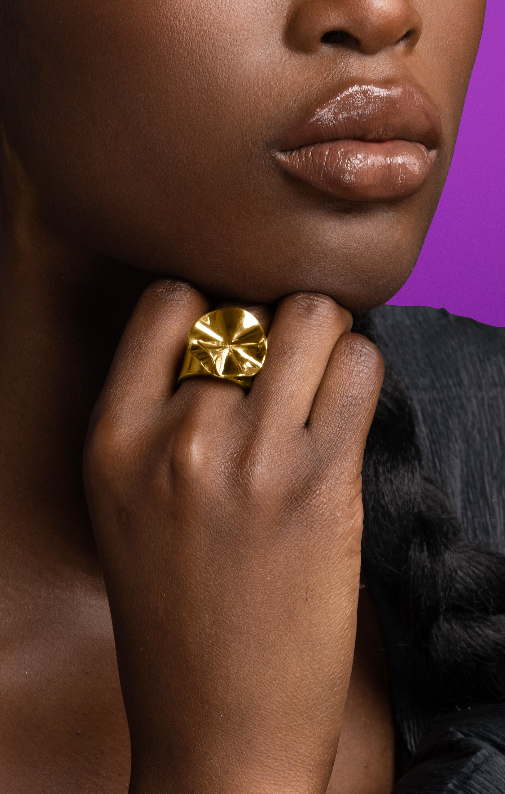
The jewellery is the artisans’. Soko is the platform.
Sources: MIT News profile of Soko; shopsoko.com (product image); Peinovich INSEAD Entrepreneur-in-Residence and co-founder of Powered by People.
53
Pattern · Disintermediation
Cut out the middleman. Sell direct, own the customer.
The innovation
Cut the sales channel, sell direct, or through an alternate channel.
Increase revenue and reduce exposure to others’ actions.
Works best when
Channel profits and incentive misalignment are high.
The channel adds little, search, delivery, inventory, customization.
The product can be sold online.
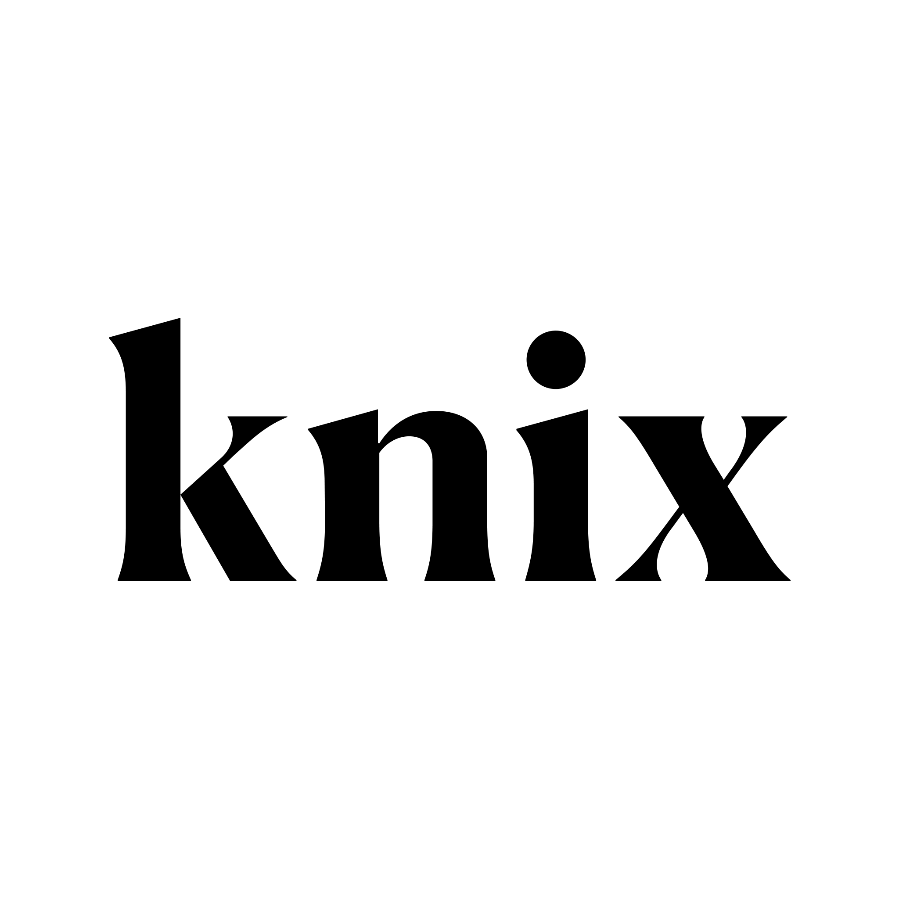
54
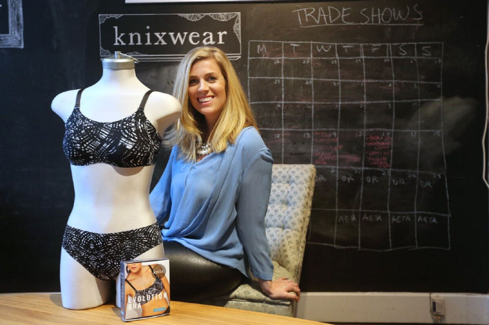
Pull out of every store. Sell direct.
Leakproof underwear for real bodies. Griffiths pulled Knix out of ~700 retail doors in 2016 to sell direct online, then sold more in 30 days than in the years before.
Essity bought 80% for US$320M, 2022
Joanna GriffithsINSEAD MBA ’12J · founder
Sources: Essity press release (Jul 2022, 80% for US$320M, ~$400M enterprise value); INSEAD alumni profile (Griffiths, MBA ’12J); Knix exited ~700 wholesale doors in 2016 to go direct-to-consumer (Glossy, Modern Retail).
55
Pattern · Modularity
Standard blocks that connect through standard interfaces.
The innovation
A product built from standard, interchangeable blocks that connect through standardized interfaces.
You get most of the benefit of a fully custom product, with operations that stay standardized.
Works best when
Customers want variety you can’t afford to build bespoke.
The same blocks reuse across many products or sites.
Car platformsOne chassis under many models.
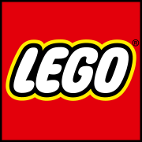
LEGOStandard bricks, endless builds.
SubwayStandard fillings, your sandwich.
Modular constructionFactory-built blocks, assembled on site.
56
Daniel Layug & teamINSEAD MBA ’17D · PeoplePods
The modularity highlight
Start from the problem, not the building.
The problem: affordable, dignified housing for migrant workers in Singapore and Indonesia. Standardize the block, multiply the variety. This venture started in this class.
35th INSEAD Venture Competition winner
Sources: intheknow.insead.edu (PeoplePods); insead.edu bio (Layug, MBA ’17D); winners of the 35th INSEAD Venture Competition and its Social Impact Award.
57
Pattern · Servicization
Sell the outcome, not the object.
The innovation
Sell the result; keep the asset and the risk.
Align everyone’s incentives on the outcome; decouple value from material use.
Works best when
The customer hates owning the asset or the risk.
You can pool the risk, or you simply know more.
Sell safe feet, not safety shoes.
Safety footwear as a service: on-site fitting, a maintenance kit, and circular take-back at end of life. Tom Hermans, CEO · INSEAD case by Calmon.
Sell safe neighborhoods, not cameras.
Cameras and analytics sold as a public-safety service. Valued at $7.5B in its 2025 round.
Sources: Emma Safety Footwear (CEO Tom Hermans; founded 1931; acquired by Hultafors Group, 2020); INSEAD case “EMMA Safety Footwear (A): Designing a Circular Shoe” (Calmon et al., 2021). Flock Safety (Atlanta), valued at $7.5B in its 2025 round.
58
The full menu
Your prompt list, in the room and tonight.
Stuck? Run your seed down each column. Pair it with the nine stimuli and you have the whole toolkit.
Profit formula · moves cost, revenue, velocity
Long-tail markets (↑rev ↑cost)
Go low touch (↓rev ↓cost)
Standardization / focus (↓cost)
Focused subscription (↑retention)
Bundling (↑rev ↓entry cost)
Timeline · moves the order of events
Speed up the timeline (↓risk ↑cost)
Commitments after information (↓risk ↑cost)
Dynamic pricing (↓risk)
Private sales (↓risk ↑rev)
Advance information (↓risk ↓rev)
Relationships · moves information & incentive risk
Disintermediation (↑rev ↓partner risk)
Intermediation: matchmaker (↓search costs)
Reputation & trust (↓opportunism)
Modularization: standard blocks (↓cost ↓risk)
Servicization: sell the service, not the asset
59
Tonight · using AI well
Use AI to refine your ideas, not to generate them.
Generate yourself first: your problems, passions, annoyances. The variance comes from you.
Research with AI: size the market, find the user, check who has tried it before.
Refine the framing: pressure-test your thesis; sharpen X, Y and Z.
Wordsmith the write-up: tighten to 100–125 words. Avoid the em-dash tell.
Your own 20, refined
5
theses to submit, drawn from the 20 ideas you generated. You stay the source of variance.
Girotra, Meincke, Terwiesch & Ulrich, 2023. Taken one at a time, AI ideas score high; GPT-4 ideas were far likelier to land in the top decile of purchase intent.
Meincke, Mollick & Terwiesch, 2024. But a batch of AI ideas clusters: low variance. So generate for breadth yourself, and let AI research and refine.
60
Tonight · the guardrails
You bring the ideas. AI sharpens them.
You generate, AI refines: your ideas in; research, sharper framing, and tighter prose out.
Lean on it to generate and variance drops: AI ideas cluster. Breadth has to come from you.
Your own voice: the crowd rates descriptions; robot prose gets robot-grade ratings. Avoid the em-dash tell.
The funnel runs on humans: Torneio’s crowd tonight, real customers later this week.
“Feel free to use AI in any way that you want. I believe that LLMs can be useful in idea generation tasks but are generally better when you (1) give a narrower target area or include constraints or (2) use it as an exploratory aid to get some ideas that you will then personally refine.”
Assignment 1, course outline
61
The clock
Three deadlines before tomorrow’s class.
A1 · tonight 23:59
Five theses on Torneio
Finish your 20 tonight, pick your 5 best. A snappy title + a 100–125-word description each, in your own voice. Each idea is its own entry.
A2 · Wednesday 13:30
Rate 75+ ideas
0–10, fast thinking, anonymous. Ignore any on-screen limit; more is better.
A3 · Wednesday 16:30
Pitch + slide
A 60-second pitch and ONE PDF slide: name, concept, and pitch order top-left. Upload on the LMS.
Cutoff
16:30PDF merge deadline: credit runs to 17:30, but upload after 16:30 and you pitch slideless.
Tomorrow: 40 pitches, 60 seconds each · the class multivotes · 10 teams of 4 form.
62
Stealth = stupid.
Ideas are cheap; follow-through is the glory. Be ethical: never pitch a classmate’s idea without permission.
Value of a venture = quality of idea × quality of execution
Idea$0 to $1,000Execution$0 to $1,000,000
A grade-B idea with grade-A execution beats a grade-A idea with grade-B execution.
Georges Doriot, who founded INSEAD.
63
16–19 June · deliverables
Four day plan
Done
Tue 16
Generate
Sessions 01–02: myths, the idea factory, tournament launch
Tonight: finish 20+ ideas, pick 5, submit as A1 · due 23:59
Register on Torneio · live in Session 02
You are here
Wed 17
Select
A2 · rate 75+ ideas, 0–10 · due 13:30
A3 · 60-second pitch + one PDF slide · upload by 16:30 for the merged pitch deck · credit until 17:30
A4 · multivote, in class · 10 teams of 4 form
Thu 18
Refine
A5 · Business Thesis + Value Creation Analysis · due 21:00
Customer discovery, live in class
Fri 19
Validate
A6 · peer review · due 8:30
A7 · concept + prototype pitch · due 8:30
A8 · community survey, in class
Validated theses
64
Go generate.
Five theses by 23:59 tonight · stephen.chick@insead.edu · rate & pitch Wednesday